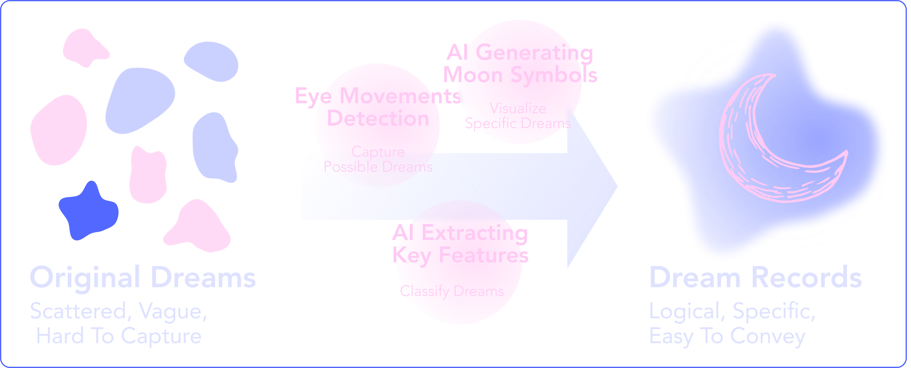
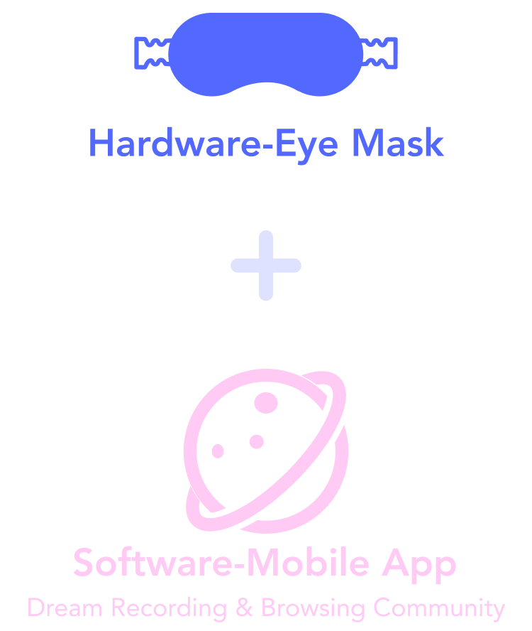
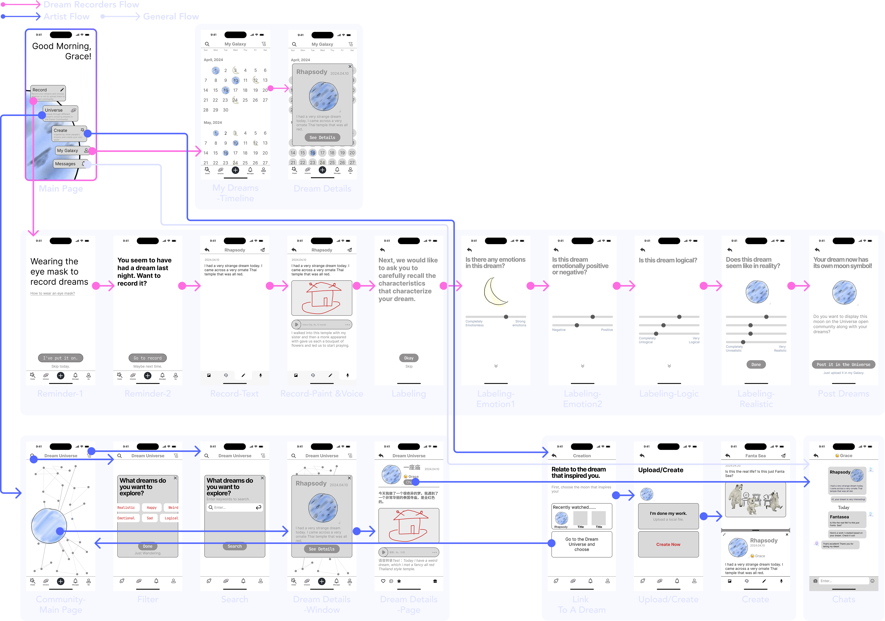
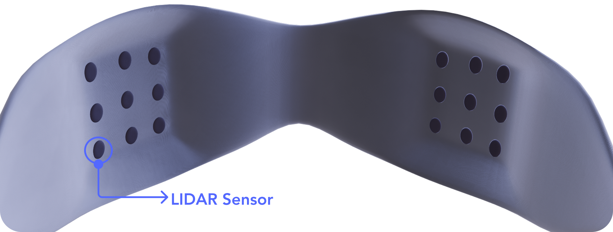
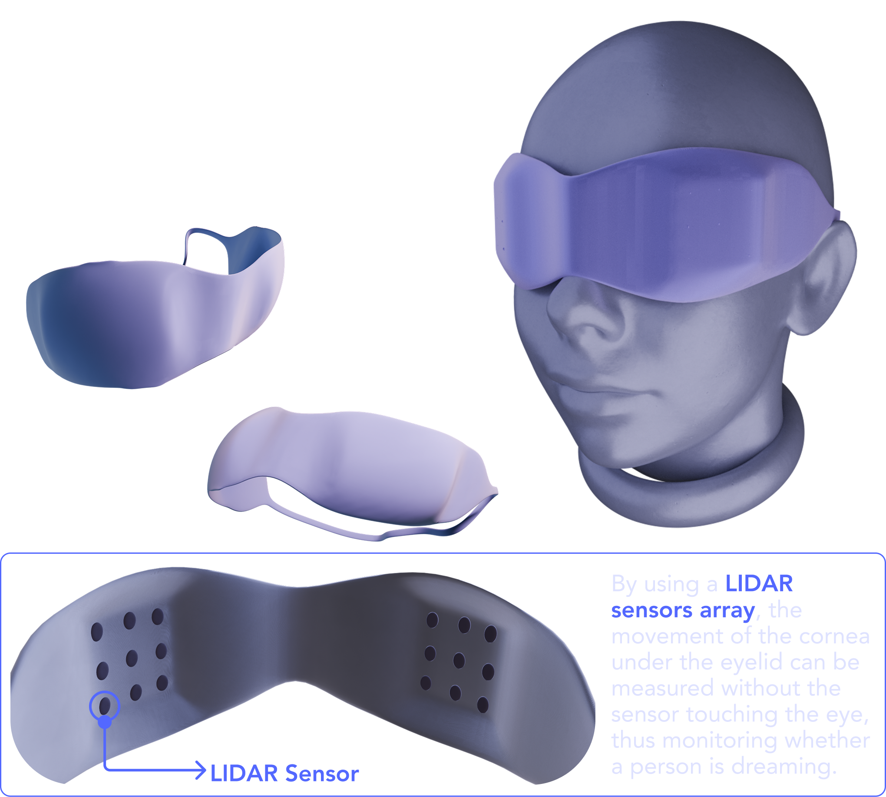

Wonderland is a service that connects artists with inspiration from people's dreams through a community platform and a sleep mask. The mask, equipped with LiDAR sensors, tracks eye movements to capture people's dreams, while the DALL-E AI model generates adjustable visual moon symbols from the data. This project transforms chaotic dreams into intuitive visual, enabling artists to communicate with dreamers and create works inspired by their dreams, fostering a collaborative and imaginative dream-sharing community.
RESEARCH
# Why DREAMS are important to creativity?
Dreams, filled with randomness and emotional metaphors, inspire many artists and result in numerous artworks. They offer more than just chaotic fragments, often holding profound emotions and metaphors.
■ Methodology: Desk Research
# Can dreams be a steady source of inspiration for creators?
Many people enjoy recording their dreams and are open to others drawing inspiration from them. People also provide logical considerations that can be used as criteria to categorize various dreams.
How Might We Connect The Needs Of Dream Recorders With Artists Looking For Inspiration From Dreams?
IDEATION
# Persona & Needs Analysis
# Design Concept

# Solutions

# Technical Features
Wonderland consists of two main components: a sleep mask that captures dreams and an AI model that visualizes them. The sleep mask uses LiDAR sensors to monitor eye movements and detect REM sleep, while the DALL-E AI model generates visual representations of dreams based on various characteristics.
## LiDAR Sensors Array - Capture Dreams
Equipped with LiDAR sensors, the sleep mask detects REM (Rapid Eye Movement) without physical contact with the eye. This technology monitors when a person is dreaming by tracking eye movements during sleep.
## DALL-E AI Model - Visualize Dreams

The DALL-E AI model generates customizable moon symbols based on dream characteristics. By adjusting parameters like emotion intensity, color spectrum, logic degree, and detail richness, each dream transforms into a unique visual representation—ranging from delicate crescents to textured full moons—capturing the emotional and narrative essence of the dreamer's experience.
DESIGN
There are five main sections in Wonderland: recording dreams, browsing other's dreams, creation based on other's dreams, my own dream space, and notifications.
# Information Architecture

# Wireframes

# Final Outputs
## Sleep Mask Design
By using a LIDAR sensors array, the movement of the cornea under the eyelid can be measured without the sensor touching the eye, thus monitoring whether a person is dreaming.


## Hi-Fi (Selected)
# User Flow*
*The character images in this part were generated with the assistance of AIGC tools.